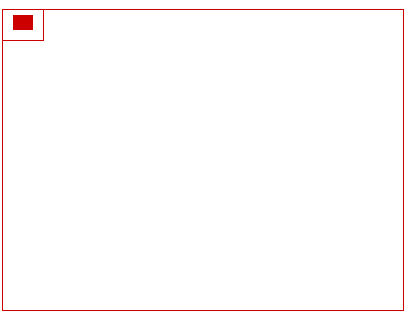

更直观的解释： 1. 如果没有viewBox, 应该是长这样的：
2. viewBox="0,0,40,30"相当于在SVG上圈了下图左上角所示的一个框框：
3. 然后把这个框框，连同框框里的小矩形一起放大到整个SVG大小（如下gif）:
上面的例子，SVG的宽高比正好和viewBox的宽高比是一样的，都是4:3. 显然，实际应用viewBox不可能一直跟viewport穿同一条开裆裤。此时，就需要preserveAspectRatio出马了，此属性也是应用在
先看下猪是怎么跑的：
preserveAspectRatio="xMidYMid meet"
>下面我们来吃猪肉。
preserveAspectRatio属性的值为空格分隔的两个值组合而成。例如，上面的xMidYMid和meet.第1个值表示，viewBox如何与SVG viewport对齐；第2个值表示，如何维持高宽比（如果有）。
其中，第1个值又是由两部分组成的。前半部分表示x方向对齐，后半部分表示y方向对齐。家族成员如下：值含义
| xMin | viewport和viewBox左边对齐 |
| xMid | viewport和viewBox x轴中心对齐 |
| xMax | viewport和viewBox右边对齐 |
| YMin | viewport和viewBox上边缘对齐。注意Y是大写。 |
| YMid | viewport和viewBox y轴中心点对齐。注意Y是大写。 |
| YMax | viewport和viewBox下边缘对齐。注意Y是大写。 |
x, y自由合体就可以了，如： xMaxYMax xMidYMid 亲爱的小伙伴，看出啥意思没？ 噔噔蹬蹬，没错，就是组合的意思：“右-下”和“中-中”对齐。恭喜你此处的知识点学习顺利毕业！
preserveAspectRatio属性第2部分的值支持下面3个
值含义
| meet | 保持纵横比缩放viewBox适应viewport，受 |
| slice | 保持纵横比同时比例小的方向放大填满viewport，攻 |
| none | 扭曲纵横比以充分适应viewport，变态 |
现在急需一个活生生的例子，让大家感受下这三个值的表现。
它使用的代码是这样的：
截取SVG左边一半(200正好宽度400的一般)作为视区，里面有个150*150的红色矩形。
默认应该是"xMidYmid meet"效果。表现原理为：SVG宽400, 高200，viewBox宽200, 高200. x横轴比例是2, y纵轴比例是1. meet的作用是让viewBox等比例的同时，完全在SVG的viewport中显示。这里，最小比例是纵向的1，所以，实际上viewBox并没有任何的缩放。 我们只要对viewBox属性值做一点小小的修改（200→300），就可以感受到缩放了 改成300后，viewBox的高度就比viewport的200高，所以，viewBox要想完全适应viewport，就要进行缩放，所以，我们可以上到上面的矩形面积变小了，就是因为缩放的结果（缩放了200/300, 差不多原来的66.7%）。 slice也是要保持viewBox的纵横比的，不过，其作用是尽量填满viewport. 同样，这里viewBox宽度200，SVG的width是400. 显然，要想最大化充满，viewBox的宽度就需要扩大为原来的两倍。于是，就有了上图viewBox放大两倍后的效果。由于viewBox部分区域超出了viewport, 视区之外内容是不可见的，于是就出现了slice所表意的“剪切”效果。 如果是none, 则表示不关心比例，viewBox直接拉伸到最大填满viewport.原本好好的一个正方形，现在因为viewBox的拉伸，变成了一个宽高2:1的矩形了。
千言万语不如一个可以自己动手体验的demo实在，：
meet/slice：
x方向：
y方向：
无论是meet还是slice，你是不可能在一种状态下同时看到x, y方向上的位移的。因为总会有一个方向是充满viewport的。